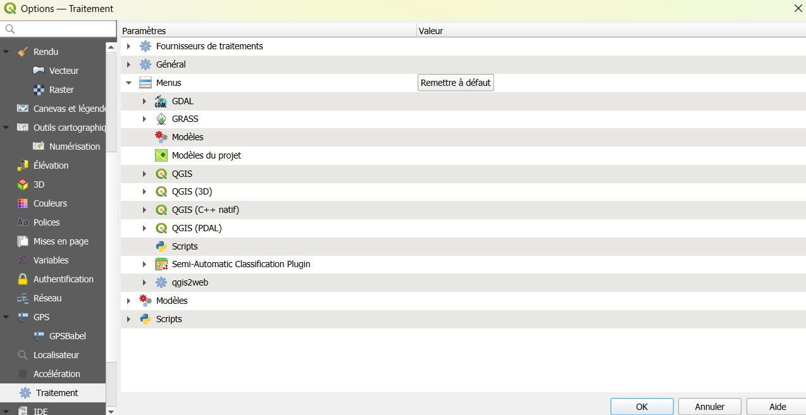
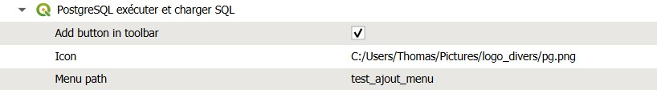
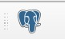
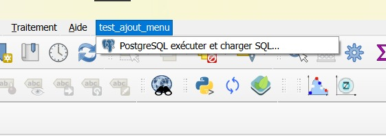
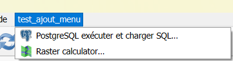

Ajout d'un bouton qui lance un traitement de la boite à outils
Problématique : ajouter un bouton dans une barre des tâches qui ouvre un processing
D'après une discussion de couloir aux rencontres utilisateurs d'Avignon en 2025, j'ai googélisé et je suis tombé sur la bonne réponse de Pierre mister Gladal.
https://georezo.net/forum/viewtopic.php?id=130793
Question ? Est-ce bien documenté dans le doc officielle ?
Méthodologie
Se rendre dans "Préférences" > "Options" et dans l'onglet Traitement on va paramétrer l'activation du bouton, son icône et cerise sur la carto créer / ajouter un menu.


A ce stade, le boulot est terminé, il suffit d'éteindre / allumer QGIS.


Enjoy !
To be continued
Si je veux ajouter un autre raccrouci vers un autre processing, est-ce possible dans le premier menu ?
Et bien OUI !
